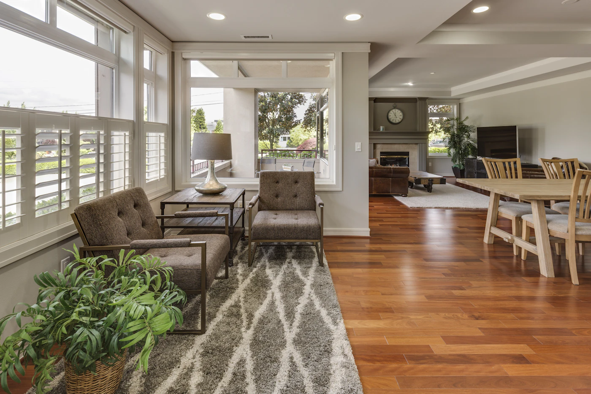
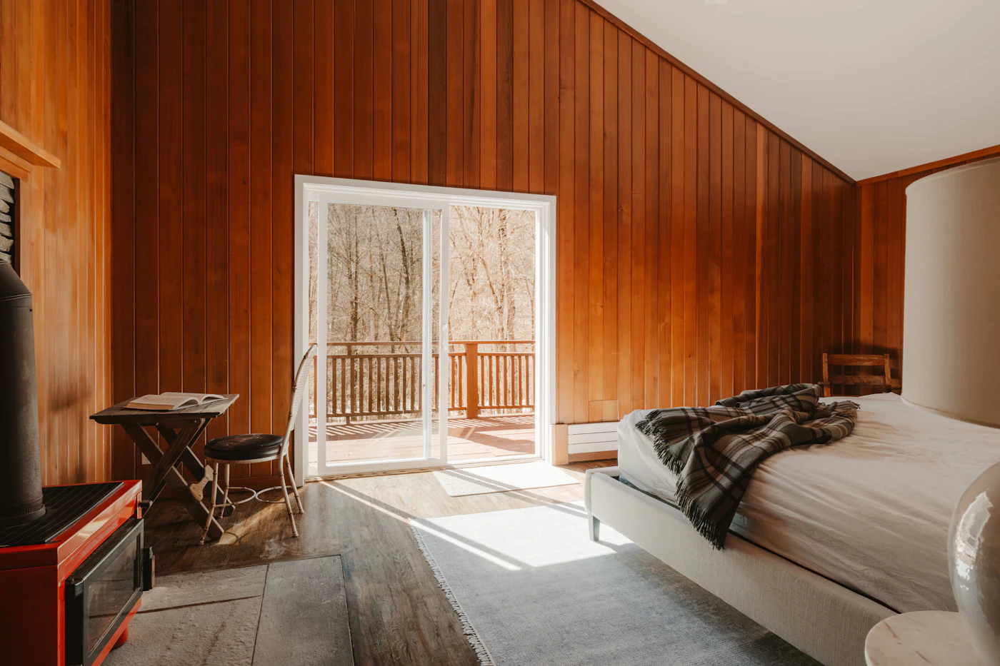
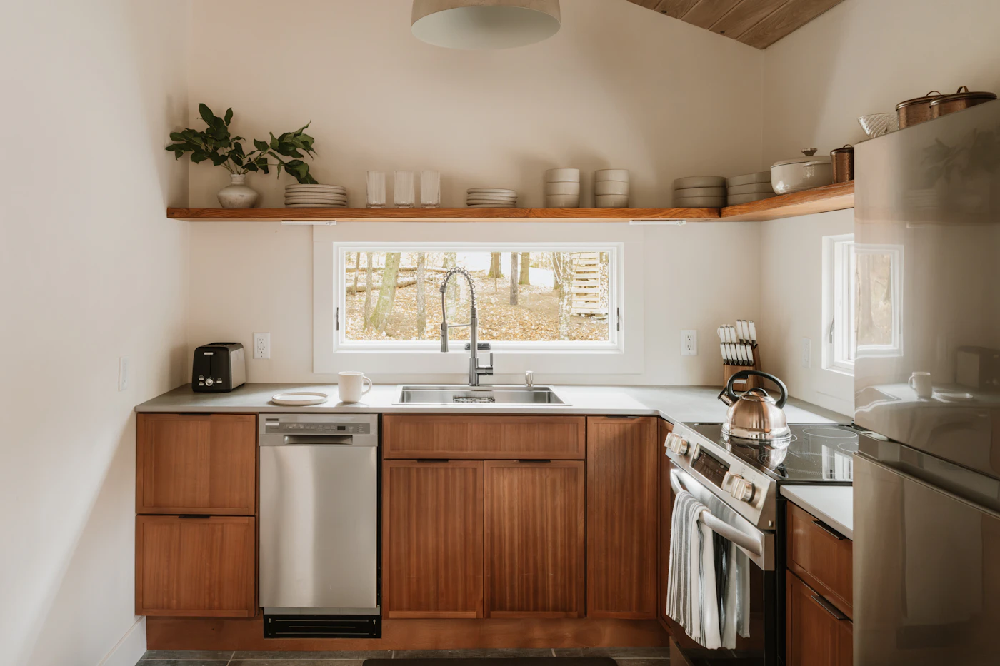
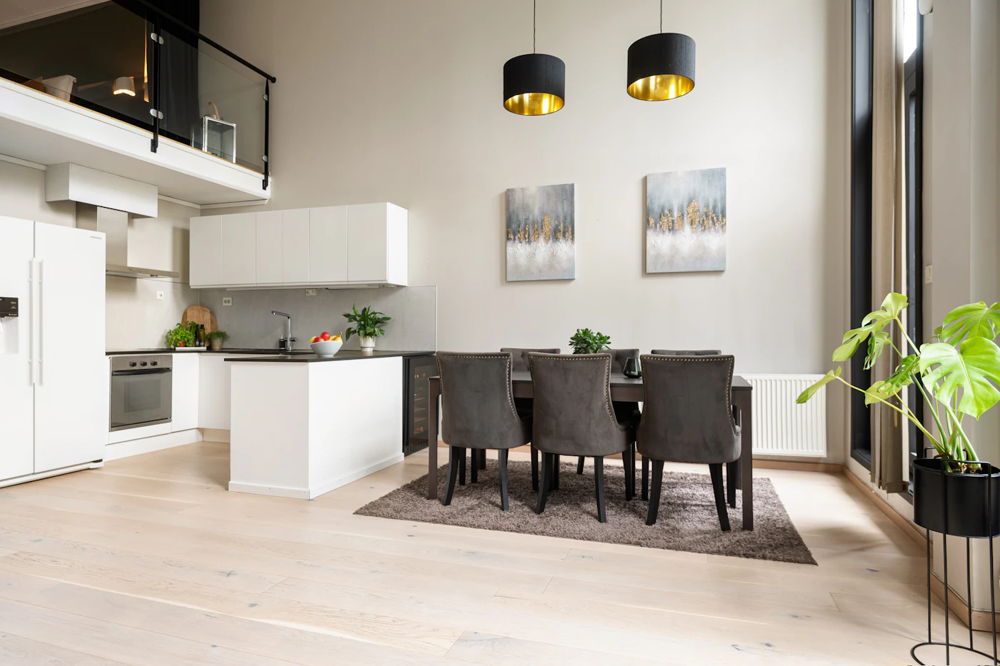
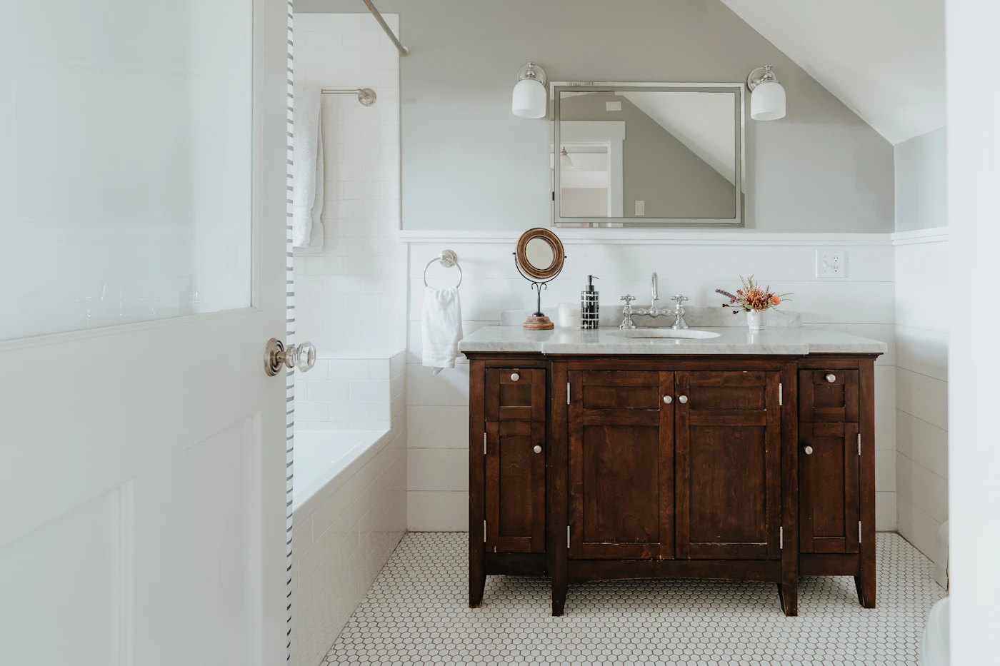
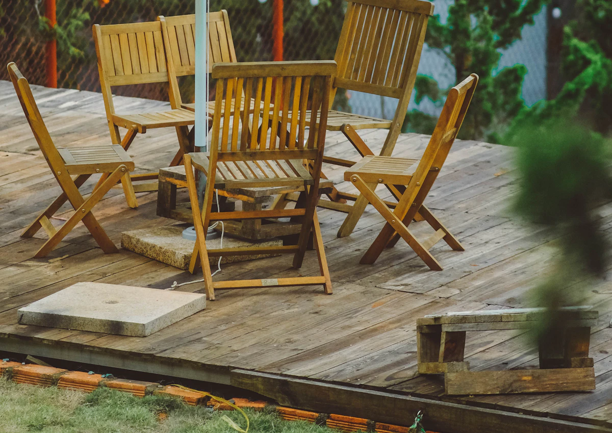

Rumah untuk masa bersama.
Anjung Nyiur ialah konsep rekaan laman homestay. Butiran penginapan di halaman ini hanya contoh.
 Foto rujukan · bukan foto hartanah
Foto rujukan · bukan foto hartanah
Selamat datang ke Anjung Nyiur.
Anjung Nyiur membayangkan sebuah banglo keluarga untuk penginapan satu kumpulan. Warisan tropika moden menjadi arah suasana: bahan semula jadi, ruang yang lapang dan sudut yang mengundang tetamu untuk berkumpul.
Semua butiran di halaman ini ialah kandungan contoh untuk demonstrasi reka bentuk, bukan spesifikasi hartanah sebenar.
Kemudahan untuk rutin yang mudah.
Contoh kemudahan untuk menunjukkan cara maklumat penginapan boleh dipaparkan.
Keselesaan
- Penyaman udara
- Wi-Fi
- Pemanas air
Dapur & makan
- Dapur untuk memasak
- Peti sejuk
- Ruang makan
Ruang & kemudahan lain
- Televisyen
- Mesin basuh
- Ruang tamu
- Parkir di premis
Senarai ini rekaan dan tidak mengesahkan kemudahan di mana-mana hartanah.
Ruang untuk berehat dan berkumpul.
Foto rujukan bagi ruang dalaman dan sudut santai.






Semua foto galeri ialah rujukan Unsplash daripada lokasi berbeza. Foto tersebut tidak menggambarkan Anjung Nyiur atau mengesahkan ciri hartanah ini.
Kadar contoh penginapan.
Contoh struktur harga untuk menunjukkan cara kadar boleh dipaparkan dengan jelas.
Semua harga ialah angka rekaan untuk demonstrasi; ia bukan tawaran atau kadar sebenar.
Lokasi yang akan ditentukan oleh pemilik.
Kawasan contoh belum ditetapkan. Laman sebenar perlu menyatakan kawasan, titik rujukan dan pautan peta selepas pemilik mengesahkan lokasi.
Kawasan contoh belum ditetapkan
Peta ditambah selepas alamat sebenar disahkan.Butiran untuk tetamu
Selepas lokasi disahkan, pemilik boleh tambah kedai makan, pasar raya, tempat ibadah dan tarikan berdekatan berserta jarak yang tepat.
Tiada tempat atau jarak direka untuk demonstrasi ini.Soalan sebelum merancang penginapan.
Semua jawapan di bawah ialah contoh; polisi sebenar perlu disahkan oleh pemilik hartanah.
Daftar masuk & tempahan
Apakah waktu daftar masuk dan daftar keluar?
Daftar masuk selepas 3.00 petang dan daftar keluar sebelum 12.00 tengah hari.
Adakah deposit diperlukan?
Contoh deposit tempahan ialah 30% daripada jumlah penginapan.
Bagaimana jika saya perlu membatalkan tempahan?
Pembatalan lebih awal daripada 7 hari mungkin layak untuk bayaran balik deposit.
Kapasiti & kemudahan
Berapakah jumlah tetamu yang boleh menginap?
Kapasiti contoh ialah sehingga 8 tetamu.
Bolehkah tetamu memasak?
Contoh polisi membenarkan penggunaan dapur; tetamu diminta membersihkan ruang selepas digunakan.
Adakah parkir disediakan?
Contoh kapasiti parkir ialah 2 kenderaan.
Peraturan rumah
Apakah peraturan rumah?
Peraturan contoh merangkumi waktu senyap, larangan merokok di dalam rumah dan had tetamu.
Semak keperluan penginapan anda.
Isikan butiran contoh untuk melihat draf pertanyaan homestay.
Pratonton sahaja. Ia tidak membuka WhatsApp, menghantar mesej atau menyimpan maklumat.